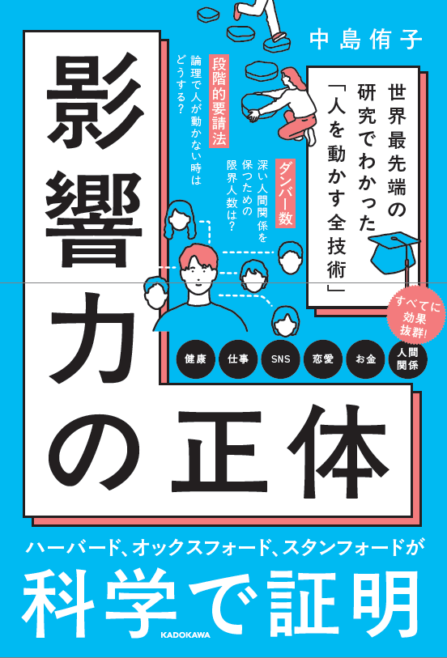

30の小さな実践を、ひとつずつ。
このチャレンジでは、まず30の実践を試してみてください。
1日1つが目安ですが、毎日できなくても大丈夫です。自分のペースで進めてください。
実践してみると、自分の気持ちや相手の反応に、小さな変化が起きるかもしれません。
「なぜ、これで変わったんだろう？」その答え合わせは、書籍『影響力の正体』で。
先に体験してから読むことで、書かれていることが自分の経験とつながり、理解がさらに深まります。
30の実践、すべて達成です。
ここからは、書籍『影響力の正体』で答え合わせをしてみてください。
